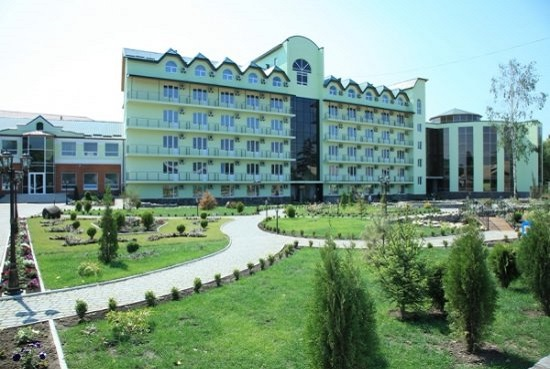
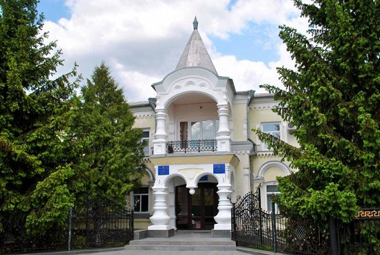
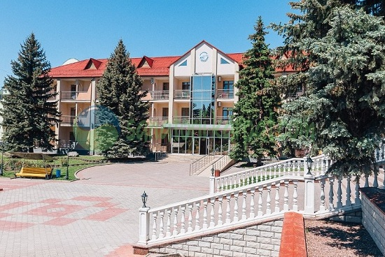
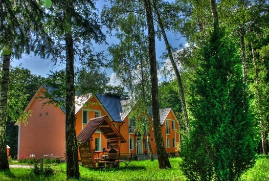
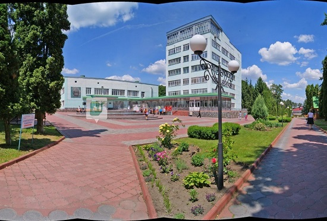

Місто Хмільник – єдиний радоновий курорт України

-

Радон
-
Поділля
-

Південний Буг
-

МЦР Залізничників
-

Березовий Гай
-

Санаторій Хмільник

Місто-курорт
Сьогодні місто розвивається як бальнеологічний курорт, один із радонових курортів в Україні. На території міста діють 8 оздоровниць (планується будівництво ще трьох санаторних комплексів). Серед основних санаторіїв Хмільника виділяються такі, як: Радон, Поділля, профспілковий санаторій «Хмільник», Південний Буг, Залізничників, Березовий гай, Військовий та корпус Поділля Преміум.
Основні засоби лікування: радіоактивні, вуглекислі, гідрокарбонат-хлориднокальціево-натрієві мінеральні води, торфове болото Війтівецького родовища. Показання: захворювання крові, органів руху, нервової системи, жіночі хвороби.
Щорічно на курорті оздоровлюється близько 50 тисяч громадян. Завдяки особливостям гідрологічної структури, запаси бальнеологічних ресурсів постійно поновлюються природним шляхом, що дозволяє щорічно приймати до 100 тис. осіб.
ВІДГУКИ ГОСТЕЙ МІСТА
Оксана
Олександр